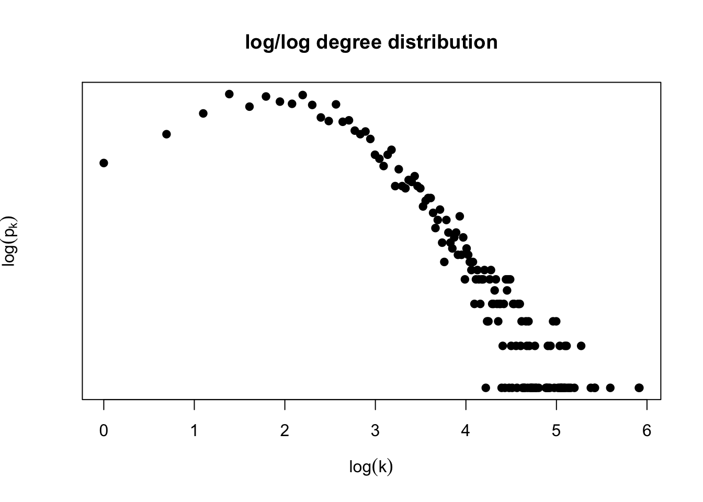

Homework: Network Models
DUE: Wednesday 10/3/2018, 11:59pm
Posted: 9/20/2018
Last Update: 9/28/2018
In our previous homework you generated the degree distribution of a genetic interaction network:

Question 1: Is this degree distribution consistent with a network generated by the Erdös-Renyi network model? Why?
Fitting the degree distribution
Use a network analysis library to estimate the degree exponent under a power-law model for the genetic interaction network.
Question 2:
Include a plot equivalent to Image 4.24b of the Barabasi book
What is the estimated degree exponent of the genetic interaction network?
Implementation (Qual)
Implement and apply the procedures of Section 4.13 in the Barabasi book to estimate the degree exponent of this network.
Extra challenge: Implement the goodness of fit method using the synthetic D statistic approach. How well does the power law with your estimated degree exponent fit the observed degree distribution of the genetic interaction network model?
Extra-extra challenge: Extend your estimation procedure to include parameters k_{sat} and k_{cut}. What is the estimated degree exponent? Do you observe better goodness of fit?
Network evolution model
In this section you will explore random network generation models to posit hypotheses of the emergence of the empirically observed structure of the genetic interaction network. A few papers that perform this type of analysis for protein-protein interaction networks are listed below.
- Generate a network of the same size as the genetic interaction network using the Barabasi-Albert model. Comment how you chose parameters of the BA model (e.g., seed graph structure and size
m_0, number of links added per time stepm, etc.) Choose a network structure measure and compare the BA generated model and the observed genetic interaction network based on your selected measure. Possible choices are:
a. degree distribution, b. correlation coefficient distribution, c. betweenness distribution, d. module organization, e. other, see papers below for ideas.Perform your comparison both qualitatively (i.e., graphically) and quantitatively. For the latter, you need to decide how to do so, e.g., if your network structure measure is based on distribution, you can use, e.g., the KS statistic to compare distributions as described in the method used to fit the degree exponent for power-law distributions
Generate a network of the same size of the genetic interaction network using a gene duplication model as described below. Comment how you chose parameters of the duplication model (e.g., seed graph structure and size, edge deletion probability
pand rewiring rater). Compare the resulting network to the observed genetic interaction network using the same measure as question 2.Choose what you think is the most appropriate network evolution model for the genetic interaction network from the taxonomy of network evolution models (Image 6.15), or other model you deem appropriate. Explain why you chose it and compare to the observed genetic interaction network as before.
igraph and other libraries have methods to generate models according to BA-like network emergence models. Feel free to use those.
Qual: implement the network generation model yourself
A simple gene duplication model
The following procedure generates a network of size n based on a seed graph G_0 and parameters p (edge deletion) and r (node rewiring). It follows the description in [xx]
- Start from a seed graph
G_0of sizen_0 - For
t=1,...,(n-n_0):
a. Select vertexv_tuniformly at random from graphG_{t-1}and duplicate it by adding new nodevwith the same links asv_t. This creates graphG_t.
b. For each edge connecting new vertexv, delete it with probabilitypc. For each vertexunot connected to new vertexv, connectuandvwith probabilityr/|V(t)|whereV(t)is the set of vertices in graphG_t.
Papers for inspiration
[1] Hormozidari et al. (2007). “Not all scale-free networks are born equal: the role of the seed graph in PPI network evolution”. PLOS Computational Biology. https://journals.plos.org/ploscompbiol/article?id=10.1371/journal.pcbi.0030118
[2] de Silva and Stumpf (2005). “Complex networks and simple models in biology”. Journal of the Royal Society Interface. http://rsif.royalsocietypublishing.org/content/2/5/419.short?casa_token=YkYfAECQUlUAAAAA:ios3YlYfBo6ddDmnUJrWPVQdX2PkmipKgsde6sQQJjwxHgXegDlD3L6T5nFcl2yp4kVFwqLt-L4H0TEw
[3] Pastor-Satorras, Smith and Sole (2003). “Evolving protein interaction networks through gene duplication”. Journal of Theoretical Biology. https://www.sciencedirect.com/science/article/pii/S0022519303000286
[4] Zhao and Mooney (2012). “Functional organization and its implication in evolution of the human protein-protein interaction network”. BMC Genomics. https://bmcgenomics.biomedcentral.com/articles/10.1186/1471-2164-13-150
[5] Hallinan (2004). “Gene duplication and hierarchical modularity in intracellular interaction networks”. Biosystems. https://www.sciencedirect.com/science/article/pii/S0303264704000309?via%3Dihub
[6] Almaas et al. (2007). “Scale-free networks in biology”. https://www.worldscientific.com/doi/abs/10.1142/9789812772367_0001
What to turn in
Turn in a single pdf containing plots and answers to each exercise. Make sure to comment on how you processed data to get an adjacency matrix.
If you used the method described above state so, if you did something else, please describe what you did. Include all code used to answer this in your pdf.
If using R, I recommend you use Rmarkdown to do this project. If using Python, I recommend you use a Jupyter notebook.
You can work in self-organizing groups of at most 3 of your classmates. On ELMS, please have every member of the group submit the same pdf.